This page gathers together basic information about the Arabic script and its use for the Standard Arabic language. It aims (generally) to provide an introduction to the orthography and typographic features, and (specifically) to advise how to write Arabic using Unicode.
See also the companion document, Arabic character notes, for detailed information about specific Unicode characters.
Select part of this sample text to show a list of characters, with links to more details. Change size: 38px
المادة 1
يولد جميع الناس أحرارًا متساوين في الكرامة والحقوق. وقد وهبوا عقلاً وضميرًا وعليهم أن يعامل بعضهم بعضًا بروح الإخاء.
المادة 2
لكل إنسان حق التمتع بكافة الحقوق والحريات الواردة في هذا الإعلان، دون أي تمييز، كالتمييز بسبب العنصر أو اللون أو الجنس أو اللغة أو الدين أو الرأي السياسي أو أي رأي آخر، أو الأصل الوطني أو الإجتماعي أو الثروة أو الميلاد أو أي وضع آخر، دون أية تفرقة بين الرجال والنساء.
وفضلاً عما تقدم فلن يكون هناك أي تمييز أساسه الوضع السياسي أو القانوني أو الدولي لبلد أو البقعة التي ينتمي إليها الفرد سواء كان هذا البلد أو تلك البقعة مستقلاً أو تحت الوصاية أو غير متمتع بالحكم الذاتي أو كانت سيادته خاضعة لأي قيد من القيود.
Usage & history
The Arabic script is the 2nd most widely used script after Latin by number of countries, and 3rd by number of speakers (after Latin and Chinese). It used for writing the Arabic language and several other languages of Asia and Africa, such as Persian, Urdu, Azerbaijani, Pashto, Uighur, etc. Historically, it was used far more widely, as its spread followed that of Islam into many countries of not only West and Central Asia, and North Africa, but also Southern and Eastern Europe, South Asia, Malaysia, East Africa, etc.
Name: ألأبجدية ٱلعربيةʔalʔabd͡ʒadiːjaʰ lʕarabiːjaʰ The Arabic alphabet (in Arabic).
The script was first used to write texts in Arabic, most notably the Qurʼān, the holy book of Islam. It descended from the Nabataean abjad, itself a descendant of the Phoenician script, and has been used since the 4th century for writing the Arabic language.
Many of the languages written in Arabic script are non-Semitic, and so employ very different sound systems from spoken Arabic. As a result the script has had to be adapted and is used slightly differently by speakers of different languages.
The Arabic script is an abjad. This means that in normal use the script represents only consonant and long vowel sounds. This approach is helped by the strong emphasis on consonant patterns in Semitic languages, however the Arabic script is also used for other kinds of language (such as Urdu and Uighur). See the table to the right for a brief overview of the features of Standard Arabic.
Arabic text runs right-to-left in horizontal lines, but numbers and embedded Latin text are read left-to-right.
The script is cursive, and some basic letter shapes change radically, depending on what they join to. It is also very common for adjacent characters to ligate and to stretch to fill available space. Many of the characters share a common base form, and are distinguished by the number and location of dots or other small diacritics, called i'jam. For example, س ش ݜ ݰ ݽ ݾ ڛ ښ ڜ ۺ., and some basic letter shapes change radically, depending on what they join to. It is also very common for adjacent characters to ligate and to stretch to fill available space. Many of the characters share a common base form, and are distinguished by the number and location of dots or other small diacritics, called i'jam. For example, س ش ݜ ݰ ݽ ݾ ڛ ښ ڜ ۺ.
There is no case distinction.
Words are separated by spaces (except some very short, usually 1-letter conjunctions and prepositions, which attach to the following word).
Modern Standard Arabic has 28 letters in its alphabet, but regularly uses 8 more. Most of those involve representations of the hamza, for which the usage is complicated. This page also lists
3 letters for foriegn sounds
, and 6 others which are used infrequently.
The script hides short vowels, however these and other phonetic information can be written where needed using diacritics. There are 3 basic vowel diacritics, but 4 more and 1 letter are occasionally used. Long vowel locations are marked by matres lectionis (consonants indicating vowel locations), which also take diacritics in vowelled text.
In vowelled text, there is a diacritic to indicate the absence of a vowel in consonant clusters, and another diacritic to indicate gemination.
A mandatory ligature has to be used for combinations of lam + alif.
Arabic uses both European and native digits, and has local forms for several of the more common punctuation marks.
Character index
This section lists non-ASCII characters used for modern Standard Arabic, and other characters in the Arabic script block not used by modern Standard Arabic. For descriptions of usage, click on ↓.
The following notes on structure are taken from Wikipedia.wp
[C1] [S1] V [S2] [C2 [C3]]
Legend
C
Consonant.
V
Vowel.
S
Semi-vowel.
Arabic syllable structure consists of an optional syllable onset, consisting of one or two consonants; an obligatory syllable nucleus, consisting of a vowel optionally preceded by and/or followed by a semivowel; and an optional syllable coda, consisting of one or two consonants.
The following restrictions apply:
Onset
C1 can be any consonant, including a liquid (l r). The onset is composed only of one consonant; consonant clusters are only found in loanwords. Sometimes an epenthetic a is inserted between consonants.
Nucleus
Includes S1 V S2.
Coda
C2 and C3 can be any consonant.
Character lists show:
Vowels
Vowel sounds
Click on the sounds to reveal locations in this document where they are mentioned.
Phones in a lighter colour are non-native or allophones. Source Wikipedia.
Plain vowels
The above chart is for 'Standard Arabic'. Even so, many regional variants of the standard pronunciation exist, not to mention local dialects.wp
o, oː and e, and eː are sometimes used for foreign words, and are sometimes introduced into speech as allophones due to regional dialects.
In addition, the adjacent consonants can also affect the vowel sounds. In particular, the sound a is retracted to ɑ around a neighboring r, q or emphatic consonants. æ is also a common allophone of a.wp
Most of the phonetic transcriptions for examples in this page therefore just use basic phonemic representations when it comes to vowels.
The diphthong aj is colloquially pronounced more like ej, however in this page we will continue to transcribe it phonetically per the official pronunciation.
Short vowels
Marks used as phonetic guides are called tashkil (تَشْكِيل).
Short vowels can be expressed using diacritics, eg. العَرَبِيَّةɑlʕarabiyaᵚẗ(al-ʻarabīyah)Arabic, however for languages such as Arabic, Persian and Urdu they are typically not used unless there is a particular need to help the reader understand the pronunciation. The previous example would therefore usually be written العربيةɑlʕrbyẗ. On the other hand, when the script is used for some other languages, such as Uighur, all vowels are shown, as a matter of course. These diacritics are also used in the Quran (though not originally), to reduce ambiguity.
The harakat (short vowel marks) in the Arabic language repertoire include the following:
َ␣ُ␣ِ␣ً␣ٌ␣ٍ␣ْ␣ٰ
Tanwīn
Tanwin refers to the secondary set of vowel diacritics with origins in classical arabic, where indefinite nouns, and adjectives were marked by a final n-sound, called تنوينtænwiːn or, in English, 'nunation'. This is indicated by visually doubling the vowel diacritic, but there are Unicode characters for each combination.
ً␣ٌ␣ٍ
In modern text this is particularly common for adverbs.jm51
In modern arabic printing the fathatan may be dropped, but the alef is retained.
The other two diacritics are much less common.jm51
Matres lectionis
ا␣و␣ي
In Arabic, the consonants listed just above may indicate the location of a long vowel, eg. قلوب, تاريخ. They are always visible, whether or not the text shows vowel diacritics.
These characters, especially ا [U+0627 ARABIC LETTER ALEF], may also be used with a number of other small marks, such as hamza, for particular effects. (see hamza).
The letter alef cannot actually represent a consonant sound on it's own (unlike the other two). In most cases it is really only a support for a vowel and/or diacritic, or an indicator of vowel length, but in word final position commonly either represents a short a, eg. أنا, or is silent, eg. رسميًا and كتبواktbwɑkætæbuː.
Alef maksura
ى
ى[U+0649 ARABIC LETTER ALEF MAKSURA] represents the long a-vowel at the end of many words when it is written with YEH instead of an ALEF. In this case the YEH is typically printed without dots, to avoid confusion (although an ordinary YEH may also be written sometimes dotless). This spelling only occurs with certain words, and only when the final sound is long, eg. aː, eg. معنىmæʕnaː. If any suffix is added, the spelling reverts to the normal alef, eg. معناهمmæʕnaː-hum.
When text is vowelled, ْ [U+0652 ARABIC SUKUN] can be used over a consonant to indicate that it is not followed by a vowel sound, eg. مَكْتَب.
Vowel to script mapping
Arabic uses diacritics to express short vowel sounds, but rarely uses them in normal text.
The following tables show how the above vowel sounds map to common characters or sequences of characters in vowelled text. The sections that follow this provide additional information.
Click on the sounds to reveal locations in this document where they are mentioned.
Phones in a lighter colour are non-native or allophones. Source Wikipedia.
labial
dental
alveolar
post-
alveolar
palatal
velar
uvular
pharyngeal
glottal
stop
pb
td tˤdˤ
kɡ
q
ʔ
affricate
d͡ʒ
fricative
fv
θð ðˤ
sz sˤzˤ
ʃʒ
xɣ
χʁ
ħʕ
h
nasal
m
n
approximant
w
lɫ
j
trill/flap
r
Modern Standard Arabic covers many territories, most of which have their own dialects or languages, and these tend to influence the local pronunciation of Standard Arabic. In the chart above, we remain conservative, only mentioning variants that tend to apply to the standard pronunciation. For a slightly more detailed set of notes, see Wikipedia.
p and v are sometimes pronounced by some speakers for foreign words, such as باكستان and فيروس. Sometimes alternative letters are used for such words (see foreign).wp
Although most dialects include it as a phoneme, ɡ is only used in Modern Standard Arabic as a marginal phoneme to pronounce some dialectal and loan words.wp
The sound ɫ occurs as a phoneme in a handful of loanwords, though not in all pronunciations. It also occurs in the name اللّٰهɑll˖̍hʔaɫˈɫaːh.
The sound, d͡ʒ is used in Algerian, Hejazi, Najdi, Iraqi, and Gulf regions, whereas ʒ is used in Moroccan, Tunisian, Egyptian, Levantine, and Israeli regions. In both cases, the sound is written using ج [U+062C ARABIC LETTER JEEM].wp
The main Unicode Arabic block contains 153 letters, with 77 more in the extended blocks. As shown in the previous section, only a small subset of those are used to write a given language. The others represent special characters added to the repertoire for one or other of the many languages for which the Arabic script is used.
The vast majority of letters represent consonants. A few represent long vowels.
The following letters are those generally recognised as constituting the alphabet for the Standard Arabic language.
Alef
ا
Stops
ب␣ت␣د␣ط␣ض␣ك␣ق
Fricatives
ف␣ث␣ذ␣س␣ص␣ز␣ظ␣ش␣ج␣خ␣غ␣ه␣ح␣ع
Nasals
م␣ن
Liquids
و␣ر␣ل␣ي
Of those, as mentioned earlier, some letters represent long vowel locations or combinations of consonant plus vowel.
Supplementary letters
Other Unicode letters regularly used in Arabic include:
ء␣آ␣أ␣إ␣ؤ␣ئ␣ى␣ة
Most of the above letters with diacritics decompose in Unicode Normalization Form D (NFD), however ة [U+0629 ARABIC LETTER TEH MARBUTA] does not.
Alef
Formally speaking, ا [U+0627 ARABIC LETTER ALEF] has no sound of its own. It is really a vowel lengthener and carrier. Its main uses in arabic orthography are:
as a carrier letter for a word-initial vowel, eg. الآن, انتباه.
That said, its presence usually indicates the location of a vowel.
It also has one or two minor functions such as in conjunction with tawiin (nunation) (see U+064B ARABIC FATHATANً).
Certain parts of the arabic verb end in a long u-vowel that is conventionally written with a following alef that has no effect on pronunciation, eg. كتبواktbwɑkætæbuː. The alef is omitted if a suffix is added, eg. كتبوهاktbwhɑkætæbuː-haa.
Hamza
ء␣أ␣إ␣ؤ␣ئ␣ٔ␣ٕ␣آ
ء[U+0621 ARABIC LETTER HAMZA] represents the glottal stop sound. For historical reasons, it is treated as an orthographic sign rather than as a letter of the alphabet. It sometimes stands alone, but usually appears with a 'carrier' letter - ALEF, WAW, or YEH for which separate precomposed characters are available in Unicode ( أ إ ؤ ئ ). Examples of use include أنكر, نائم , and بناء.
In modern printed arabic, the hamza is rarely shown when it occurs at the beginning of a word, but may appear in conjunction with another character. When the hamza is above another character you should typically use ٔ[U+0654 ARABIC HAMZA ABOVE] with the appropriate base character, although there are a number of exceptions, and for the Arabic language all the needed combinations are available as precomposed characters. For more details, see the character description.
Classical arabic distinguishes between 'cutting' and 'joining' hamza. 'Cutting' means always pronounced, 'joining' means frequently elided. The joining hamza is of little practical importance in modern arabic pronounced without the old case endings. When it does appear in modern Arabic, ٱ [U+0671 ARABIC LETTER ALEF WASLA] is used to indicate a joining hamza.
It is used for historical reasons to indicate the feminine ending, a, and is only used in final position. The dots are borrowed from TEH (ت). If any suffix is added, the ending is spelled with ت[U+062A ARABIC LETTER TEH], eg. مَدرَسَتنَا.
In modern arabic it is not uncommon to find the two dots omitted, particularly on masculine proper names that have the feminine ending, eg. طلبةt̴lbẗtulbæ. In such cases, should one write with normal he?
Vowelled text may omit the short a diacritic before the TEH MARBUTA, because the sound is always the same.
Letters for foreign sounds
The following characters are not part of the standard Arabic language set but are occasionally used to represent foreign sounds.
ڤ␣پ␣چ
Two of the above are borrowed from Persian/Urdu.
Other letters
The following characters also have the general property of Letter, but are less commonly used for modern Arabic language text.
ٱ [U+0671 ARABIC LETTER ALEF WASLA] is described in the section hamza. Whereas many of the above letters with diacritics decompose in Unicode Normalization Form D (NFD), this letter does not.
ﷲ [U+FDF2 ARABIC LIGATURE ALLAH ISOLATED FORM] is a letter from the Arabic precomposed block used to write the name of Allah. The composition of this character differs from font to font in terms of glyph forms. With some fonts it is necessary to add diacritics, whereas with others it is not.
ـ [U+0640 ARABIC TATWEEL] is used to stretch words for simple justification, or to make a word or phrase a particular width, or as a form of emphasis. For more information see justify.
Arabic definite article
The pronunciation of ال (alif followed by lām) varies when it represents the Arabic definite article.
The lām is not pronounced if it precedes one of the following characters, but instead the following sound is doubled, eg. السلام علیکمɑlslɑm ʿlykmasːalɑːm ʕalajkumgreetings.
ت␣ث␣د␣ذ␣ر␣ز␣س␣ش␣ص␣ض␣ط␣ظ␣ل␣ن
These are called 'sun letters' in Arabic. The other letters are 'moon letters'.j32
The alif is also not pronounced if the preceding word ends with a vowel or h. It is, however, written.j32
Consonant clusters & gemination
The diacritic ّ [U+0651 ARABIC SHADDA] doubles the value of the consonant it is attached to, which is phonemically significant in Arabic, eg. تاجر، تجّار. Like the short vowels, it, too, is not often used, although sometimes it appears when vowel signs don't.
When both shadda and kasra are attached to the same base consonant, a common, though not universal, practice is to display the kasra below the shadda, rather than below the base consonant, eg. مُمَثِّلْ. Some fonts, such as Amiri, don't do this. (See also gpos.)
Ligatures
The combination ل + ا [U+0644 ARABIC LETTER LAM + U+0627 ARABIC LETTER ALEF] is always written as a ligature. The underlying code points are, however, preserved. The form of this ligature that joins to the right is لا, and unjoined it is لا.
Observation: When diacritics are used with this ligature, they sometimes appear to be over the ALEF, rather than over the LAM, eg. قليلاً. This would require a typing order that is different from the spoken sequence.
Other combinations of characters are likely to also ligate (see gsub). The number of ligatures in text typically depends on the font used, but ligation can also be used as a device to manage justification, in which case it needs some degree of manual control
Only the main Arabic Unicode block contains the symbols, none of which are widely used by Arabic language text.
؆␣؇␣؈␣؋␣؎␣؏␣۞␣۩␣۽␣۾
Characters in the Arabic Presentation Forms blocks should not normally be used, but they contain just a few symbols that are not just for compability use, including the following.
﴾␣﴿␣ﷲ␣ﷺ␣ﷻ␣﷽␣﷼
For more information about how they are used, click on them and follow the links to the the character notes page.
Formatting characters
The Arabic script uses a large number of Unicode characters that affect the way that other characters are rendered. Many of those have no visible form of their own.
The following set does have a visual representation. All these characters are found in Unicode's Arabic block, but none are commonly used for modern Arabic language text.
␣␣␣␣␣␣␣
Modern Arabic text makes use of a relatively large set of invisible formatting characters, especially in plain text, many of which are used to manage text direction.
More recently, the Unicode Standard added a set of characters which do the same thing but also isolate the content from surrounding characters, in order to avoid spillover effects. They are RLI [U+2067 RIGHT-TO-LEFT ISOLATE], LRI [U+2066 LEFT-TO-RIGHT ISOLATE], and PDI [U+2069 POP DIRECTIONAL ISOLATE]. The Unicode Standard recommends that these be used instead, however some applications don't yet recognise them.
There is also FSI [U+2068 FIRST STRONG ISOLATE], used initially to set the base direction according to the first recognised strongly-directional character.
ALM [U+061C ARABIC LETTER MARK] is used to produce correct sequencing of numeric data. Follow the link for details.
ZWJ [U+200D ZERO WIDTH JOINER] and ZWNJ [U+200C ZERO WIDTH NON-JOINER] are used to control the joining behaviour of cursive glyphs. They are particularly useful in educational contexts, but also have real world applications.
ZWJ permits a letter to form a cursive connection without a visible neighbour. For example, the marker for hijri dates is an initial form of heh, even though it doesn't join to the left, ie. ه. For this, use ZWJ immediately after the heh, eg. الاثنين 10 رجب 1415 ه..
ZWNJ prevents two adjacent letters forming a cursive connection with each other when rendered. For example, it is used in Persian for plural suffixes, some proper names, and Ottoman Turkish vowels. Ignoring or removing the ZWNJ will result in text with a different meaning or meaningless text, eg, تنها is the plural of body, whereas تنها is the adjective alone.2 The only difference is the presence or absence of ZWNJ after noon.
CGJ [U+034F COMBINING GRAPHEME JOINER] is used in Arabic to produce special ordering of diacritics. The name is a misnomer, as it is generally used to break the normal sequence of diacritics.
Numbers, dates, currency, etc.
Digits
٠␣١␣٢␣٣␣٤␣٥␣٦␣٧␣٨␣٩
A set of arabic-indic digits are typically used in Middle Eastern and Gulf countries, whereas North African countries tend to use European digits. In neither area, however, is one digit style used exclusively.
The CLDR standard-decimal pattern is #,##0.###. The standard-percent pattern is #,##0% or #,##0٪.c
See also expressions about directional implications for handling expressions or sequences of numbers.
Extended-Arabic digits. Still in the basic Unicode Arabic block, there is a second set of digits in Unicode for use in languages such as Persian and Urdu.
۰␣۱␣۲␣۳␣۴␣۵␣۶␣۷␣۸␣۹
The glyph shapes are typically different for 3 of the digits, although not always the same digits in Persian, Urdu and Sindhi.
Arabic
٠١٢٣٤٥٦٧٨٩
Persian
۰۱۲۳۴۵۶۷۸۹
Urdu
۰۱۲۳۴۵۶۷۸۹
Sindhi
۰۱۲۳۴۵۶۷۸۹
Arabic-indic numerals, as used in Arabic, Persian, Urdu and Sindhi language text.
Text direction
Arabic script is written horizontally and right-to-left in the main but, as in most right-to-left scripts, numbers and embedded left-to-right script text are written left-to-right (producing 'bidirectional' text).
العاشر ليونيكود (Unicode Conference)، الذي سيعقد في 10-12 آذار 1997 مبدينة
Arabic words are read right-to-left, starting from the right of this line, but numbers and Latin text are read left-to-right.
The Unicode Bidirectional Algorithm automatically takes care of the ordering for all the text in fig_bidi, as long as the 'base direction' is set to RTL. In HTML this can be set using the dir attribute, or in plain text using formatting controls.
If the base direction is not set appropriately, the directional runs will be ordered incorrectly as shown in fig_bidi_no_base_direction.
في XHMTL 1.0 يتم تحقيق ذلك بإضافة العنصر المضمن bdo.
في XHMTL 1.0 يتم تحقيق ذلك بإضافة العنصر المضمن bdo.
The exact same sequence of characters with the base direction set to RTL (top), and with no base direction set on this LTR page (bottom).
Unicode provides a set of 10 formatting characters that can be used to control the direction of text when displayed. These characters have no visual form in the rendered text, however text editing applications may have a way to show their location.
More recently, the Unicode Standard added a set of characters which do the same thing but also isolate the content from surrounding characters, in order to avoid spillover effects. They are RLI [U+2067 RIGHT-TO-LEFT ISOLATE], LRI [U+2066 LEFT-TO-RIGHT ISOLATE], and PDI [U+2069 POP DIRECTIONAL ISOLATE]. The Unicode Standard recommends that these be used instead, however some applications don't yet recognise them.
There is also FSI [U+2068 FIRST STRONG ISOLATE], used initially to set the base direction according to the first recognised strongly-directional character.
A sequence of numbers, for example a range separated by hyphens, runs right to left in the Arabic language (and Thaana or Syriac scripts), whereas for Persian language text (and in Hebrew, N’Ko or Adlam scripts) it runs left to right.
fig_range_ar shows Arabic text which is right-to-left overall, containing an ASCII-digit numeric range that is also ordered RTL, ie. it starts with 10 and ends with 12:
في 10–12 آدار
A numeric range in Arabic language text.
In Persian, however, the expression would run LTR, so this would be:
في 10–12 آدار
A numeric range in Persian language text.
When a list uses the ASCII hyphen as a separator, the Unicode Bidirectional Algorithm automatically produces the expected ordering only when a sequence or expression follows Arabic characters. However, a sequence that appears alone on a line will be ordered left-to-right (because there is no preceding Arabic character). To make the sequence read right-to-left you need to add the formatting character U+061C ARABIC LETTER MARK (ALM) at the start of the line (see fig_alm). This is effectively an invisible Arabic script character.
10-01-2018
A numeric date in Arabic language text without a preceding Arabic letter needs ALM before it. (Click on the number to see the underlying characters.).
The required order cannot be achieved by simply setting the base direction, nor by using U+200F RIGHT-TO-LEFT MARK. It has to be ALM.
Alternatively, you could use a different separator, such as – [U+2013 EN DASH] (as in fig_range_ar) or ‐ [U+2010 HYPHEN]. No special arrangements are then necessary.
If you are writing in Persian, however, you don't need to add anything in this case.
10-01-2018
The same date in Persian language text.
On the other hand, if the sequence or expression follows text you need to either isolate the sequence directionally or precede it with U+200E LEFT-TO-RIGHT MARK (LRM) to make it look correct (click on persianExpressions to see that in action).
Similar special ordering is applied to numbers in equations, such as 1 + 2 = 3, for Arabic language text.
This section brings together information about the following topics:
writing styles;
cursive text;
context-based shaping;
context-based positioning;
baselines, line height, etc.;
font styles;
case & other character transforms.
Arabic orthographies can be grouped into a number of writing styles, some of which are more common for particular languages, while others can be used interchangeably for the same language. Sometimes the variations are adapted to usage, for example book text vs. inscriptions; sometimes the variants reflect regional, cultural or stylistic calligraphic preferences.
The different styles include Naskh, Nasta'liq, Ruq'a, Thuluth, Taʻlīq, Kufi, Diwani, Maghribi, Kano. The examples in this page use a naskh writing style. For a brief introduction to font styles, with examples, see the following pages: Text layout requirements for the Arabic script, the home page of arabicfont.org, and
The naskh writing style is the most prominent style for the Arabic language, and has become the default form of Arabic language content in most contexts. It has clearly distinguished letters, which make it easy to read, and can be written in small sizes.
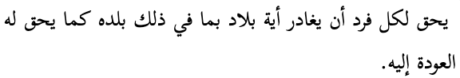
Arabic is commonly written in the naskh writing style.
The ruq’ah writing style was designed for use in education, in official documents, and for every-day writing. It is known for its clipped letters composed of short, straight lines and simple curves, as well as its straight and even lines of text. It is a functional style of writing that is quick to write and easy to read. It also doesn’t extend baselines, like a naskh font does. In 2010's rebranding of Amman a ruq'ah font family was created to serve as an italic face. Monotype has an interesting article on the development of ruq'ah.
The Waseem font released with Mojave OS is based on the ruq'ah style.
The nasta’liq writing style is the standard way of writing Urdu and Kashmiri, and is also often a preferred style for Persian text. Key features include a sloping baseline for joined letters, and overall complex shaping and positioning for base letters and diacritics alike. There are also distinctive shapes for many glyphs and ligatures.
The same Arabic language text rendered with the Awami Nastaliq font.
The kano writing style is a common way of writing Hausa in Nigeria in the ajami script, and like other East African writing it is based on Warsh (Warš) forms, which incorporate Maghribi characteristics. Some sources describe an alternative Hafs (Ḥafṣ) orthography, used with hand-written adaptations for the newspaper Al-Fijir.
The same Arabic language text rendered with the Alkalami font.
The kufi writing style is the original style used for the Koran, but is not used for newspapers or official content today. However, it is used in modern content for logos and other stylised applications.
The same Arabic language text rendered with the KufiStandardGK font.
Cursive script
Arabic script joins letters together. This results in four different shapes for most letters (including an isolated shape). The highlights in the example below show the same letter,
ع[U+0639 ARABIC LETTER AIN], with three different joining forms.
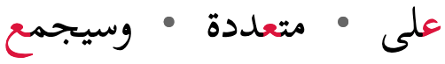
The letter ع (ain) in 3 different joining contexts.
A few Arabic script letters only join on the right-hand side. These are the 10 most commonly used for the Arabic language.
ا␣آ␣أ␣إ␣د␣ذ␣ر␣ز␣و␣ؤ
Context-based shaping
In all but the most basic fonts, glyph shapes are highly variable for Arabic letters. For example, fig_mishafi_ka shows a wide variety of shapes produced by default in the Mishafi font for ك [U+0643 ARABIC LETTER KAF] when followed by various letters.
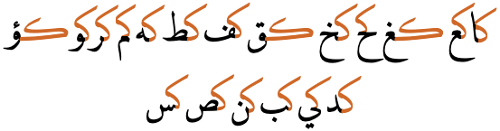
Glyph variation in the Mishafi font.
Teeth letters
A good font will constantly change the shape of glyphs slightly so as to create a more aesthetically pleasing, and in some cases a more easily readable, flow.
Three examples where the same letter is repeated, but the glyph shapes differ.
teeth_letters shows an example where the same word is displayed using different fonts.a The font on the left applies rules to distinguish the letter bases clearly. Note, in particular, that although there are 3 letters which are repeated, none of those letters uses the same shape twice.
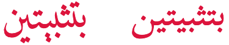
The same word in two different fonts (Mishaf and Scheherazade).
Special joining forms
In more traditional fonts, you will also often see the join between certain characters, when adjacent, above the baseline, like this:
rather than on the baseline, like this:
But actually a good font will typically have a range of shapes and placements for a given letter, depending on the adjoining letter. This is illustrated in noon_joining_forms.a→
Various different forms for the initial letter noon,
Characters within a word may also combine vertically in certain groupings. See the example in vertical_joining.
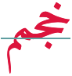
Vertical arrangements of letters in the word خجمم,
Ligatures
Ligated glyph forms are common in Arabic. Some, such as لا are mandatory. Most of the remainder depend on the font style. The lam-alif ligature also affects other characters that are based on the alif, such as for لإ لأ لآ.
Traditional fonts tend to have more optional ligated forms than modern styles.
vs. 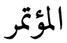
The same word with ligatures (right) and no ligatures (left).
Ligatures are often used to manage justification. Since they generally reduce the horizontal width of a word, they can be used to fit more text on the end of a line, or balance baseline stretching.
Context-based positioning
When vowel or shadda diacritics are used they can be placed in different positions, according to the context.
يتكلّم • تسجّل
The position of the shadda diacritic depends on the height of the base character in many fonts.
When both shadda and vowel signs are combined with a base character, a more complicated set of rules may be applied. Depending on the font used, some vowel diacritics may be placed relative the shadda diacritic, rather than relative to the base character.
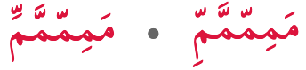
When kasra and shadda diacritics appear together, the kasra may be below the base character (right), or below the shadda (left), depending on the font.
Baselines, line height, etc.
The alphabetic baseline is a strong feature of Arabic script on the whole, since characters tend to join there. This is not always the case: for example, some adjacent pairs or ligatures have joins above the baseline, and initial letters in some fonts may start slightly above the baseline, but for most cases it remains a strong feature.
The nastaliq writing style, on the other hand, uses arrangements of joined glyphs that cascade downwards from right to left, and ressemble a strongly sloping baseline.
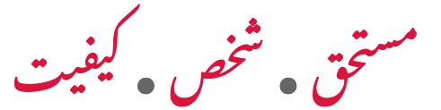
Sloping baselines in Urdu nastaliq text.
However, even writing styles with an ostensibly flat baseline may, in good quality fonts, draw words on a slightly slanted baseline, or multiple baselines, as shown in fig_word_baselines.a
Words with a gradually sloping baseline (left) and multiple baselines (right).
Characters within a word may also combine vertically in certain groupings, as mentioned in the previous section.
Line height and multi-script positioning. Even without the deviations from the baseline described above, the ascenders and descenders of Arabic letters tend to travel further from the baseline that is usual in Latin script text. Allowances for this need to be made for line height settings on a page, but also it can be problematic when combining Latin and Arabic text on the same line using different fonts for each.
If the Arabic font supports the needed Latin letters, the font design will already take into account the relative sizes of the letters, and their placement relative to the baselines of each script. If different fonts are used, though, it's important to match the baselines and harmonise the font sizes used.
Font styles
Italics & oblique
Arabic text does use slanting letters. In some cases the letters may be slanted to the left as in fig_font_style_italic.
The text just below this newspaper title leans to the left.
Case & other character transforms
Arabic has no case distinction.
However, as mentioned in numbers, Arabic sometimes uses ASCII digit glyphs and other times uses local digit glyphs. Some fonts and authoring applications allow you to choose which glyph shapes to use for the same underlying characters.
Arabic fonts may also have alternative shapes for glyphs, which can be turned on in certain circumstances. For example, some fonts have a set of swash forms for certain characters, which can be used for justification, or just for effect.
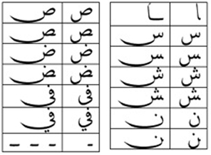
The jalt table in the Arabic Typesetting font contains alternative elongated forms. (source)
Structural boundaries & markers
Grapheme boundaries
In most cases Arabic text uses precomposed characters and omits vowels. Therefore grapheme boundaries are consistent with individual letters. Where this is not the case, the additions are combining marks, and the Unicode grapheme cluster is designed to span combinations of base character plus any number of following combining marks.
One potential complication is that fonts often render sequences of characters as ligated forms. The ligated forms are a font-specific feature, whereas grapheme clusters are based on code point sequences: some fonts may display the same sequence of characters without a ligated form. Most applications tend to move character by character through the text, producing situations like the cursor position in fig_gc_ligature_cursor.
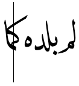
The cursor positioned between k and m in the ligated form for كماkmɑ. (source)
This approach allows for easy deletion or insertion of any component of a ligated form.
Word boundaries
Words are separated by spaces.
In Arabic, small words like 'and' (و) are written alongside the following word with no intervening space (eg. الجامعات والكليات means 'universities and colleges', but there is only one space). Such small words are handled typographically as part of the word they are attached to.
Arabic language uses a mixture of western and arabic punctuation. Other languages using the Arabic script may use different punctuation, such as the full stop in Urdu.
آخر، … والنساء.
Arabic language text using an arabic comma, but an ASCII full stop.
Arabic language text also uses ‐ [U+2010 HYPHEN], – [U+2013 EN DASH], and — [U+2014 EM DASH].
Arabic language text uses 2 different sets of quotation marks. Sometimes they are mixed in the same text. The example in fig_quotation_marks uses both in a single sentence.
It is important to note that the Unicode names for these marks should be ignored. 'Left-pointing' should be read 'Start', and 'Right-pointing' as 'End'. The direction in which the glyphs point will be automatically determined according to the base direction of the text.
The other quote marks are ” [U+201D RIGHT DOUBLE QUOTATION MARK] at the start, and “ [U+201C LEFT DOUBLE QUOTATION MARK] at the end.c
When an additional quote is embedded within the first, the quote marks are ’ [U+2019 RIGHT SINGLE QUOTATION MARK] and ‘ [U+2018 LEFT SINGLE QUOTATION MARK].c
Unlike the bracketing quotation marks, these characters are not mirrored during display. This means that left means use on the left, and right means use on the right.
Emphasis
Emphasis can sometimes be expressed by stretching the baseline of one or more words. See the section on justification below for more information about baseline stretching.
Other punctuation marks used in Arabic include the following.
‐␣–␣—؍␣٭
Line & paragraph layout
This section focuses mainly on Arabic language text, however attention is sometimes drawn to differences when the Arabic script is used for other languages.
Line breaking & hyphenation
Lines are normally broken at word boundaries.
They are not broken at the small gaps that appear where a character doesn't join on the left.
Like most writing systems, certain characters are expected not to start or end a line. For example, periods and commas shouldn't start a line, and opening parentheses shouldn't end a line.
Breaking between Latin words. When a line break occurs in the middle of an embedded left-to-right sequence, the items in that sequence need to be rearranged visually so that it isn't necessary to read lines from top to bottom.
latin-line-breaks shows how two Latin words are apparently reordered in the flow of text to accommodate this rule. Of course, the rearragement is only that of the visual glyphs: nothing affects the order of the characters in memory.
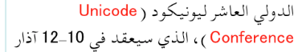
The lower of these two images shows the result of decreasing the line width, so that text wraps between a sequence of Latin words.
Hyphenation/word-breaking
Hyphenation isn't used for the Arabic language, however other languages using the Arabic script may hyphenate (such as Uighur).a
Character properties
Characters used for the Arabic language have the following default assignments related to line-break properties, according to the Unicode Standard. Some tailoring may be needed for Arabic language text.
AL
44
ى ا ب ت ث ج ح خ د ذ ر ز س ش ص ض ط ظ ع غ ف ق ك ل م ن ه و ي ء آ أ إ ؤ ئ ى ة ڢ ڧ ࢲ ـ ﷲ ٱ
AL (ordinary alphabetic and symbol characters) requires other characters to provide break opportunities; otherwise, unless tailored rules are applied, no line breaks are allowed between pairs of them.
B2 (break opportunity before and after) the EM DASH used to set off parenthetical text may allow line breaks before or after, but may also be affected by local orthographic rules.
BA (break after) indicates that it is normal to break after that character.
IN (inseparable characters) is intended to be used consecutively. There is never a line break between two characters of this class.
IS (infix numeric separators) usually occurs inside a numerical expression and may not be separated from the numeric characters that follow, unless a space character intervenes. For example, there is no break in “100.00” or “10,000”, nor in “12:59”..
NU (number) behaves like ordinary characters (AL) in the context of most characters but activate the prefix and postfix behavior of prefix and postfix characters.
PO (postfix numeric) usually follows a numerical expression and may not be separated from preceding numeric characters or preceding closing characters, even if one or more space characters intervene. For example, there is no break opportunity in “(12.00) %”..
QU (quotation) characters can be opening or closing, or even both, depending on usage. The default is to treat them as both opening and closing.
Text alignment & justification
Arabic script justification can be implemented using a number of different techniques, which ideally are applied in combination. These include:
Adjustment of inter-word spaces.
Micro-adjustments to the intra-word spaces that occur where characters don't join with the following letter.
Use of wider glyph forms or swash forms for certain characters.
Stretching the baseline connectors between letters, which we'll refer to here as kashida.
Application of ligated forms to reduce the width of certain words.
(In hand-written manuscripts it is also possible to find instances where the letters the would appear at the end of the line are squeezed above the last word in the line, or hang into the margin.)
The application of the various techniques is generally subject to rules governing the frequency and location of use of particular methods. Rules can differ by writing style – for example, elongation is not normally used at all for ruq'a fonts. Where baseline stretching is applied, the rules for what can be stretched, and how much, are complicated. Unlike space-based width adjustments, baseline extension is not a question of simply adding equal-length extensions across the line. The rules tend to differ across orthographies, and eminent typographers of the past also had their own preferred or idiosyncratic rules.
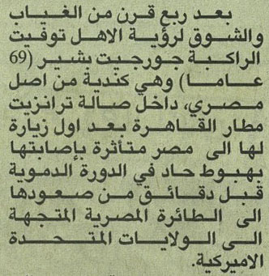
An example from a newspaper column of justified text.
The baseline extension character ـ[U+0640 ARABIC TATWEEL] is sometimes suggested as a way of producing justification by extending the baseline, however when a browser window is resized, or when new text is added near the start of a paragraph, lines wrap differently and all the places where tatweel would be needed have to be recalibrated. Thus tatweels only work for static text with fixed dimensions.
Better quality justification systems stretch glyphs, rather than adding baseline extensions. This dynamic stretching of glyphs is often called 'kashida'. In some typesetting systems, such as InDesign, the stretching can be produced automatically without the need for tatweel characters. InDesign has controls to vary the preferred length of the extensions.
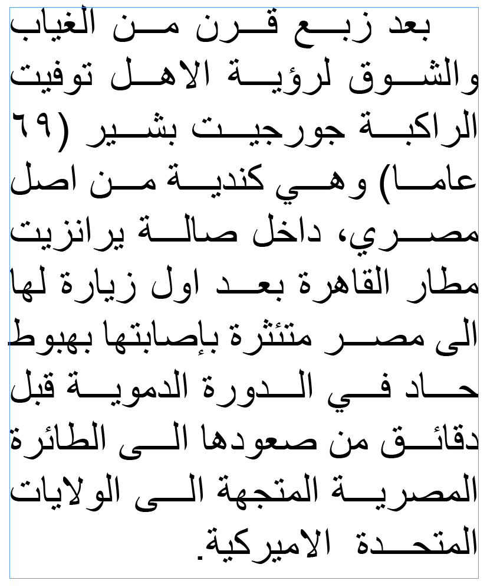
The same text, but produced automatically by InDesign, without the use of tatweel.
Note that the result of the automatic justification in fig_kashida_justification is different from that in the newspaper clipping. For one thing, the kashida effect is only applied once per word (but is applied to most words). The rules determining which combinations of characters receive baseline stretching, and the extent of that stretching also differ.
InDesign also allows fonts to substitute long swash variants for certain characters, which soak more some of the horizontal space.
The last 2 lines of the previous example, showing swash forms.
Well justified text would apply a mixture of swash characters, space stretching, kashidas and ligatures to achieve a visually appealing and effective justification. Also, the baseline stretching in fig_kashida_justification is flat. A more advanced system would instead produce elegantly curved kashidas more like handwritten text.
It is very common to see baseline stretching in modern Arabic text where a word or phrase is stretched to fill a particular space, eg. the Arabic tag line (الابداع المتجددCreativity renewed) below the word Lexus in fig_lexus is stretched to be the same width.
Arabic text being stretched to fit the width of text alongside it.
Observation: Text that is stretched in this manner very often has multiple kashidas per word. This is perhaps understandable, given that usually only a small number of words are involved.
Letter spacing
Spaces are not added between characters, with the exception of micro-spacing during justification, which is applied to word-medial letters that don't join to the left. On the other hand, the baseline between words is often stretched.
It is quite common to see Arabic text stretched to fit a given width, as shown in fig_lexus, but that type of stretching is more akin to justification than the typical letter-spacing that is applied to other scripts. The amount of stretch is determined by the area that needs to be filled.
In some cases, it may be that elongation of words is driven by stretching the distance between letters rather than matching an external template, for example to express emphasis or prolonged sound. However, as for justification, this is not normally based on an even amount of stretch between all letters, as letter-spacing tends to be in other scripts.
Ready-made Counter Styles list 3 counter styles for use with the Arabic language: one numeric and 2 fixed styles. Wikipedia lists 2 more styles: an old maghrebi sequence and the hijai sequence.
1
2
3
4
arabic-indic
(numeric)
١
٢
٣
٤
arabic-abjad
(fixed)
ا
ب
ج
د
maghrebi-abjad
(fixed)
ا
ب
ج
د
11
21
24
28
44
arabic-indic
(numeric
١١
٢١
٢٤
٢٨
٤٤
arabic-abjad
(fixed)
ك
ش
خ
غ
-
maghrebi-abjad
(fixed)
ك
ت
خ
ش
-
111
222
333
444
arabic-indic
(numeric)
١١١
٢٢٢
٣٣٣
٤٤٤
arabic-abjad
(fixed)
-
-
-
-
maghrebi-abjad
(fixed)
-
-
-
-
Comparative counters produced by Arabic counter styles.
Numeric
The arabic-indic numeric style for the Arabic language is decimal-based and uses the digits shown below.
٠␣١␣٢␣٣␣٤␣٥␣٦␣٧␣٨␣٩
Fixed
The arabic-abjad fixed style for the Arabic language uses the letters shown just above. It is only able to count to 28.
Note that the 5th counter includes a zero-width joiner formatting character. This makes the shape distinguishable from ٥ [U+0665 ARABIC-INDIC DIGIT FIVE].
Fixed (maghrebi)
The maghrebi-abjad fixed style for the Arabic language uses the letters shown just above. It is also only able to count to 28. The letters are the same as those used for the arabic-abjad style, but 6 occur in different positions.
The table below shows the differences between fixed counter styles for the Arabic and Persian languages. In addition to the styles described above are two other sequences that are mentioned in Wikipedia – an old maghrebi sequence and the hijai sequence.
A blank cell uses the same letter as the nearest non-blank cell above it.
1
2
3
4
5
6
7
8
9
10
11
12
13
14
15
16
17
18
19
20
21
22
23
24
25
26
27
28
29
30
31
32
persian-abjad
ا
ب
ج
د
ه
و
ز
ح
ط
ی
ک
ل
م
ن
س
ع
ف
ص
ق
ر
ش
ت
ث
خ
ذ
ض
ظ
غ
arabic-abjad
ي
ك
magrebi-abjad
ص
ض
س
ظ
غ
ش
WP old magrebi
ت
ث
ج
ح
خ
د
ذ
ر
ز
ط
ظ
ك
ل
م
ن
ص
ض
ع
غ
ف
ق
س
ش
ه
و
ي
WP hijai
س
ش
ص
ض
ط
ظ
ع
غ
ف
ق
ك
ل
م
ن
persian-alphabetic
پ
ت
ث
ج
چ
ح
خ
د
ذ
ر
ز
ژ
س
ش
ص
ض
ط
ظ
ع
غ
ف
ق
ک
گ
ل
م
ن
و
ه
ی
Styling initials
It is possible to find cases where Arabic enlarges and styles the first character at the beginning of a paragraph, but it is quite rare.
Observation: It is not clear whether it is appropriate to maintain the joining forms of the initial letter and the following letter. A good proportion of the examples seen have the initial letter in a box, in which case it appears to be in isolated form. For further discussion see this thread and this one.
Page & book layout
This section is for any features that are specific to Arabic and that relate to the following topics:
general page layout & progression;
grids & tables;
notes, footnotes, etc;
forms & user interaction;
page numbering, running headers, etc.
General page layout & progression
Arabic books, magazines, etc., are bound on the right-hand side, and pages progress from right to left.
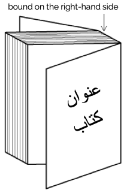
Binding configuration for Arabic books, magazines, etc.
Columns are vertical but run right-to-left across the page.
Grids & tables
Tables, grids, and other 2-dimensional arrangements progress from right to left across a page.
Forms & user interaction
Form controls should display Arabic text from right to left, starting at the right side of the input field. Form controls should also usually be arranged from right to left.
fig_form shows some form fields from an Arabic language web page. Note the position of the labels relative to the input fields and the checkbox, mirror-imaging a similar page in English. Note also that the input text in the first field appears to the right of the box.
A set of form fields on an Arabic web page
The position of a scrollbar should depend on the user's environment, not on the content of a page. A non-Arab user viewing a web page in Arabic shouldn't have to look for the scroll bar on the left side of the window. In a system that is set up for an Arab user, however, the scrollbar can appear on the left.
Character lists
Version 12.0 of the Unicode Standard has the following blocks dedicated to the Arabic script: :
Arabic153 letters, 52 marks, 20 numbers, 12 punctuation, 10 symbols, 8 other : total 255
There are two additional blocks for presentation forms, but (with the exception of a handful of code points) these characters are only for compatibility with legacy encodings, and should not be used. Sometimes they are used by people to get around problems with Arabic support in applications, but this is a bad idea since it corrupts the underlying data, making it difficult to search, spellcheck, or do many other things that rely on the use of standard characters and their properties.
The Arabic orthography described here uses characters from the following Unicode blocks.


 vs. 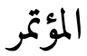
vs. 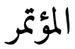